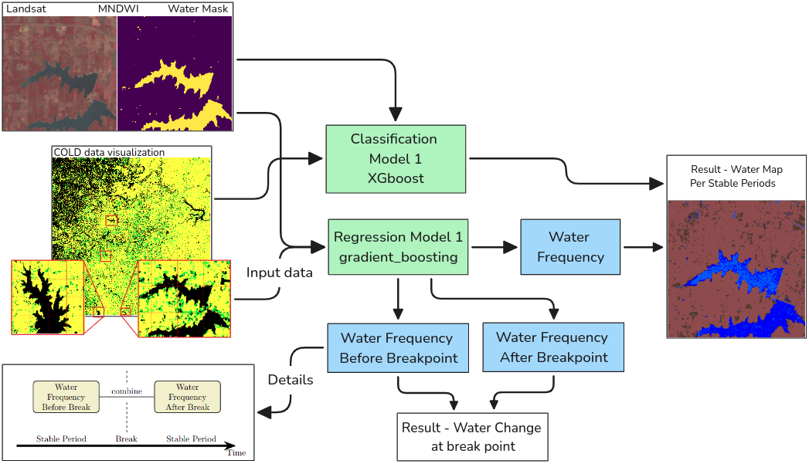
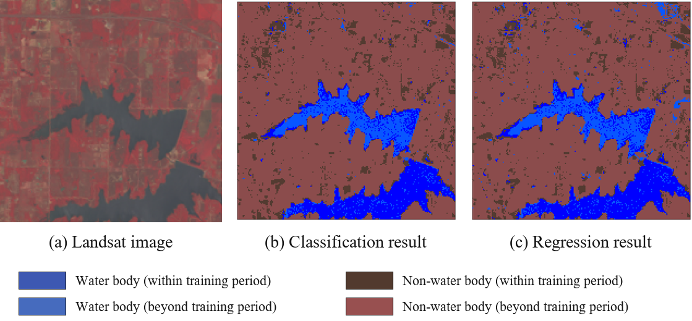

Research Need
Small farm ponds are widely used for livestock, irrigation, fish production, recreation, stormwater retention, and habitat support, yet their cumulative hydrologic impact is often overlooked.
NSF Award #2429932
A remote sensing framework for monitoring subseasonal farm pond dynamics and strengthening water resource resilience across the Southern Great Plains.
Project Overview
Small farm ponds are widely used for livestock, irrigation, fish production, recreation, stormwater retention, and habitat support, yet their cumulative hydrologic impact is often overlooked.
The project develops an automated monitoring framework that uses high-resolution satellite time series to detect farm pond changes at regional scale.
Timely water-change information can support drought and flood alerts, land and water management, rural economies, and environmental conservation.
Research Approach
Analyze very high-resolution satellite imagery with frequent revisit cycles to track pond extent and water-cover changes over time.
Use a data-driven, automated, and adaptive workflow to identify changes in farm ponds, intermittent streams, and ephemeral wetlands.
Pair the PI's remote sensing classification expertise with NASA Marshall Space Flight Center collaborators' accuracy assessment and validation expertise.
Translate monitoring outputs into timely information that helps explain environmental disturbance, human activity, drought, and flooding impacts.
Paper Figures


| Metric | Regression Models | Classification Models | ||||
|---|---|---|---|---|---|---|
| GBoosting | RForest | LRegression | XGBoost | RForest | SVC | |
| Overall Acc. | 0.91 +/- 0.03 | 0.90 +/- 0.04 | 0.89 +/- 0.07 | 0.92 +/- 0.06 | 0.89 +/- 0.06 | 0.92 +/- 0.06 |
| WF <= 0.25 | 0.91 +/- 0.04 | 0.89 +/- 0.06 | 0.85 +/- 0.12 | 0.96 +/- 0.04 | 0.88 +/- 0.10 | 0.94 +/- 0.06 |
| WF > 0.25 | 0.81 +/- 0.07 | 0.85 +/- 0.07 | 0.92 +/- 0.07 | 0.74 +/- 0.17 | 0.81 +/- 0.13 | 0.81 +/- 0.07 |
| F1-score | 0.72 +/- 0.09 | 0.72 +/- 0.11 | 0.70 +/- 0.19 | 0.77 +/- 0.15 | 0.70 +/- 0.21 | 0.79 +/- 0.11 |
COLD figures were extracted from the arXiv preprint PDF.
Benchmark Dataset
SWD-Net provides an expert-annotated benchmark for delineating small and seasonal water bodies from aerial and satellite imagery. It supports the Farm Pond Watch goal by improving the detection of fine-scale, irregular, and fragmented ponds that are often missed by coarser global water products.
Baseline experiments compare U-Net, Mamba U-Net, SegFormer U-Net, ViT U-Net, and Swin U-Net, with Swin U-Net reporting the strongest test performance.
View DOI| Model (%) | IoU | F1 | Precision | Recall |
|---|---|---|---|---|
| U-Net | 93.01 | 96.27 | 95.06 | 97.55 |
| Mamba-U-Net | 87.38 | 92.88 | 90.12 | 96.10 |
| SegFormer-U-Net | 92.36 | 95.89 | 94.06 | 97.91 |
| ViT-U-Net | 91.05 | 95.13 | 93.20 | 97.27 |
| Swin-U-Net | 93.53 | 96.56 | 95.02 | 98.23 |
Broader Impacts
Regional pond dynamics can improve understanding of water balance, streamflow regimes, and resilience under irregular precipitation and frequent drought.
The fellowship supports an Associate Professor and postdoctoral researcher while strengthening collaboration between the University of Oklahoma and NASA MSFC.
Updated information on farm ponds can help agencies, organizations, landowners, and communities make more informed decisions about sustainable water use.
Acknowledgment
This material is based upon work supported by the U.S. National Science Foundation under Award No. 2429932 through the EPSCoR Research Fellows program.
Any opinions, findings, and conclusions or recommendations expressed in this project report are those of the authors and do not necessarily reflect the views of the U.S. National Science Foundation.
Research Output
Pham, Huong; Cheng, Samuel; Hu, Tao; Deng, Chengbin. Remote Sensing Letters, 2025.
View DOILiu, Di; Deng, Chengbin; Olofsson, Pontus; Yan, Songkun; Wang, Jiao; Hu, Isabelle; Hong, Yang. IEEE Geoscience and Remote Sensing Letters, 2026.
View DOI